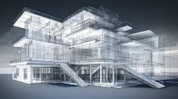
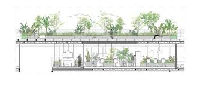
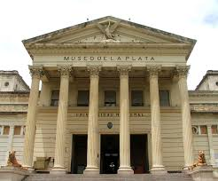
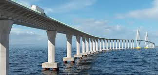

Projetos Recentes
Projeto Planta Grande
Este projeto residencial destaca-se pela sua arquitetura inovadora e espaços amplos, com plantas abertas que promovem a fluidez entre os ambientes. A utilização de grandes janelas maximiza a luz natural e oferece vistas panorâmicas do entorno, enquanto materiais sustentáveis garantem eficiência energética.
Casa Simples
.jpeg)
Uma residência que celebra a essência do minimalismo, a Casa Simples é projetada para ser acessível e funcional. Com linhas retas e um layout prático, este projeto utiliza materiais locais e técnicas de construção tradicionais, criando um lar aconchegante que se integra ao seu ambiente.
Casa Viva
Um projeto inovador que incorpora elementos da natureza dentro do espaço doméstico, a Casa Viva apresenta jardins internos e sistemas de captação de água da chuva. As áreas externas são projetadas como extensões da casa, permitindo que os moradores se conectem com o ambiente ao seu redor.
Rasbiscos
.jpeg)
Este projeto experimental, chamado "Rabiscos", é uma galeria de arte que celebra a criatividade. Com uma fachada dinâmica e interativa, a construção permite que artistas locais exibam suas obras de forma inovadora. O interior é flexível e adaptável, promovendo eventos culturais e comunitários.
Casa Alto Suficiente
.jpeg)
Com uma estrutura elevada, a Casa Alto Suficiente foi projetada para aproveitar vistas deslumbrantes e maximizar a privacidade. Utilizando uma base de pilares, o projeto também inclui áreas externas que conectam os moradores à natureza, oferecendo um refúgio tranquilo e sofisticado.
Museu de Athena
Inspirado na deusa da sabedoria, o Museu de Athena é um espaço cultural dedicado à educação e à arte. Com uma arquitetura grandiosa e contemporânea, o museu abriga exposições interativas e programas educacionais, buscando inspirar e engajar visitantes de todas as idades.
Ponte Internacional
Esta ponte icônica conecta duas nações e simboliza a união e a colaboração entre culturas. Projetada com um design arrojado e sustentável, a estrutura utiliza materiais de alta durabilidade e incorpora áreas de lazer para pedestres, promovendo a interação social.
Cristo Redentor de Amena
.jpeg)
Uma reinterpretação do famoso Cristo Redentor, este projeto em Amena visa ser um ponto de encontro espiritual e turístico. Com um design que combina modernidade e elementos clássicos, a estrutura oferece vistas panorâmicas e um espaço para reflexões, atraindo visitantes de todo o mundo.